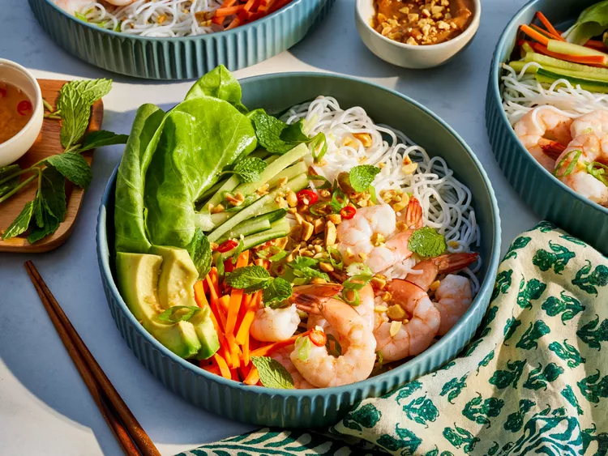

Spring roll bowl

Ingredients:
- 4 ounces vermicelli noodles
- 1 pound large shrimp - peeled, deveined, and cooked
- 1 head butterhead lettuce, torn into bite-sized pieces
- 2 large carrots, peeled and julienned
- 1 English cucumber, julienned
- 1 avocado, sliced
- 2 green onions, sliced on a bias
- 1/2 cups small mint leaves (or torn large leaves)
- 1/4 cup salted peanuts
Peanut Sauce:
- 1/4 cup creamy peanut butter
- 1/4 cup canned unsweetened light coconut milk
- 2 tablespoons hoisin sauce
- 1 tablespoon lime juice
- 1 tablespoon chopped roasted peanuts
- 1 teaspoon sambal oelek (optional)
Nuoc Cham:
- 6 tablespoons rice vinegar
- 2 tablespoons fish sauce
- 1 tablespoon lime juice
- 1 tablespoon minced ginger
- 1 birds eye chile, thinly sliced (optional)
How to make the spring roll bowl:
- Gather all ingredients.
- Cook vermicelli noodles according to package directions. Run under cold water to cool. Divide noodles among four bowls.
- Add one fourth of the cooked shrimp to each bowl. On the side of the noodles arrange 1 cup of lettuce, 1/4 cup carrots, 1/4 cup cucumber, and 1/4 an avocado to each bowl.
- Meanwhile for Nam Chom combine rice vinegar, fish sauce, lime juice, ginger, and birds eye chile (optional) in a small bowl.
- For the peanut sauce combine peanut butter, coconut milk, hoisin sauce, lime juice, peanuts and sambal oelec in a small bowl; whisk until smooth.
- Top bowls with green onions, mint leaves and peanuts. Serve with peanut sauce and/or Nam Choc.
Home